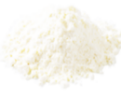
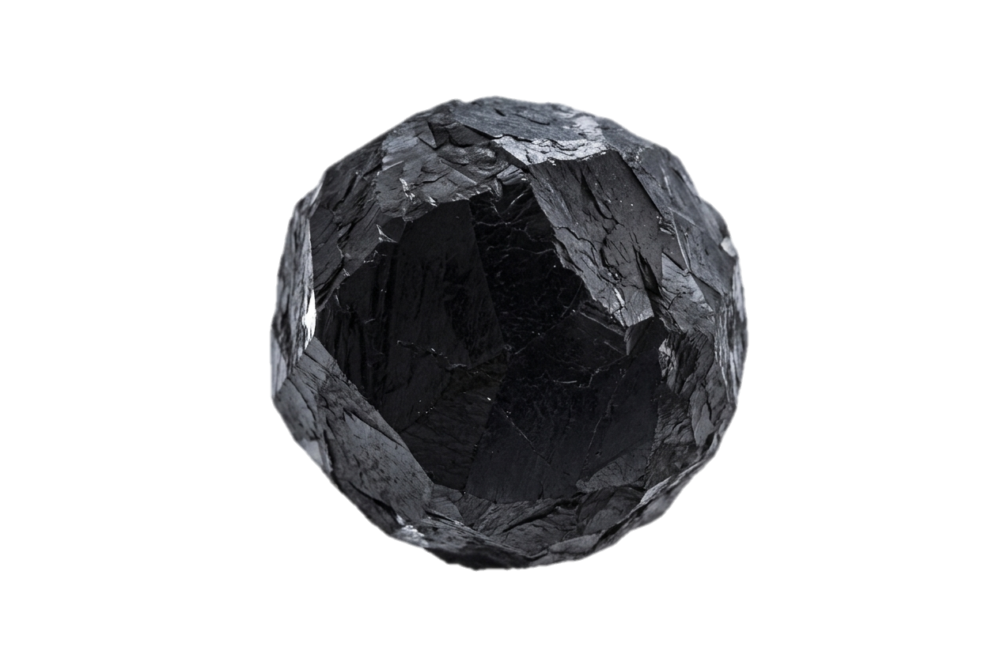

TECHNOLOGY
[솔루션2] 개요 – 친환경 차세대 배터리 재활용 공정기술 (2세대)
 폐배터리팩
폐배터리팩→
→
 블랙매스
블랙매스A. 기존공정 (1세대)
→
 용매추출
용매추출→
재활용 양극재 4종

MnSO4 NiSO4
NiSO4 CoSO4
CoSO4 Li2CO3
Li2CO3 부산물 — 폐흑연(버려짐)
부산물 — 폐흑연(버려짐)B. COSOLUS공정 (2세대)
→
 부유선별
부유선별→
 양극재용
양극재용블랙매스
→
 건식환원
건식환원→
 코발트
코발트 니켈
니켈 음극재용
음극재용블랙매스
→
 유도가열
유도가열→

고순도정제흑연
→
경제성
친환경성
양산성 확보
친환경성
양산성 확보
15